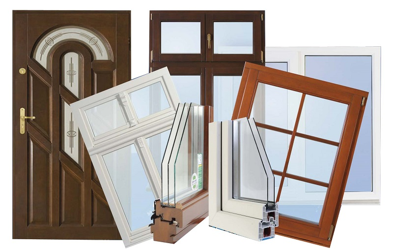

Защитные двери.

Для повышения безопасности квартиры или дома могут быть установлены так называемые защитные двери. Это конструкции, выполненные из стали, которые бывают типовыми либо нестандартными (как по размерам, так и по форме). Такие двери могут оснащаться остекленными вставками либо фрамугами со стеклом, устойчивым к взлому.
Производством стальных дверей в нашей стране занимается множество фирм, однако большинство таких изделий достаточно легко вскрывается. Дело в том, что почти все стальные двери отечественного производства изготавливаются из обычного металлопроката самым простым способом.
При этом в соответствии с требованиями защитные двери должны быть выполнены из специального профиля, который производится на прокатных станах и листосгибах. Только при наличии современного оборудования и использовании особой технологии можно изготовить защитную дверь, обеспечивающую высокую степень надежности.
Изделия этого типа выполняются из цельнокатаного листа. Его края загибаются так, чтобы полотно двери и силовой каркас составляли единую конструкцию. Последний дополняется ребрами жесткости и предполагает укладку теплоизоляции.
Класс устойчивости защитной двери должен соответствовать помещению, для которого она изготовлена. Этот показатель определен ГОСТами, с которыми необходимо ознакомиться, прежде чем принять решение о покупке двери. Комплектация защитных дверей стандартная и показана на рис. 34.
Рис. 34. Комплектация защитных дверей: а – дверь с панелями; б – коробка; в – рама
Гарантия надежности двери подтверждается сертификатом о прохождении испытаний на противовзломность. В том случае, если она оснащена оконной системой, последняя проходит аналогичные тесты и тоже получает сертификат.
Качество защитной двери определяют качество материала, из которого она изготовлена, комплектующие элементы, соответствие инструкции заданным параметрам и точное соблюдение правил изготовления, сборки и установки.
Типовая защитная дверь показана на рис. 35.
Рис. 35. Конструкция защитной двери: 1 – глазок; 2 – верхний ригель основного замка; 3 – верхний запирающий штырь; 4 – каркас створки; 5 – люк для ремонта; 6 – крепление вертикальной тяги; 7 – ригели; 8 – сувальдный замок; 9 – защелка; 10 – ригель; 11 – вспомогательный замок; 12 – нижняя тяга замка; 13 – направляющая вертикальной тяги; 14 – нижний запирающий штырь; 15 – монтажный анкер; 16 – тепло– и звукоизолятор; 17 – коробка; 18 – противосъемный штырь; 19 – крепеж отделки; 20 – несущий петлевой уголок; 21 – задний стальной лист; 22 – передний стальной лист
Защитная дверь должна отвечать следующим требованиям:
– защищать от взлома, взрыва и пожара;
– соответствовать нормам тепло– и звукоизоляции;
– быть устойчивой к природно-климатическим воздействиям;
– иметь эстетичный внешний вид;
– закрываться без особых усилий.
Следует также заметить, что защитная дверь должна быть снабжена двумя замками разного типа повышенной секретности, иметь противовзломную задвижку и анкерную систему крепления. Правильное расстояние между замками – от 300 мм.
Дверная коробка устанавливается с использованием металлических штырей. Она приваривается к ним по всему периметру, при этом средний штырь проходит через запорную планку замка. Все они должны быть заглублены не менее чем на 80 мм и располагаться с шагом не менее 700 мм.
Защитная дверь может открываться только наружу. Она обязательно оснащается торцевыми крюками, защищающими от несанкционированного проникновения в помещение при механическом повреждении двери. Эти крюки входят в анкерные пластины, которые приварены к дверной раме.
Участки врезки замков закрываются специальными накладками, выполненными из легированной стали, что предохраняет замок от высверливания. Кроме того, дверь оснащается дверным глазком или камерой наблюдения.